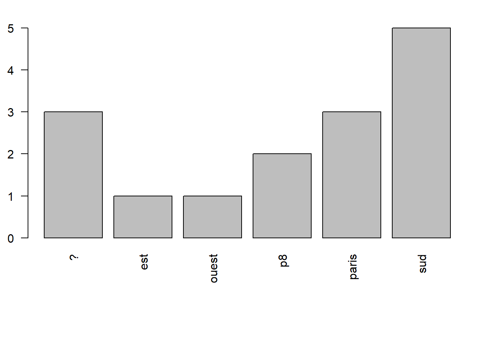

Introduction
BMaranget
2/08/2023
1 Objectif
1.1 Des cartes électorales à la maille du bureau
Fin juin ont été publiés en opendata bureaux de vote et adresse des électeurs (REU), Etalab et data.gouv.fr ont travaillé sur la génération des contours des bureaux de vote.

L’objectif est de vérifier au niveau local le travail d’Etalab puis de croiser résultat des votes et habitat social permettant ainsi une approche fine du territoire avec la variable lourde que représente l’habitat social.
1.2 Et OSM dans tout celà ?
Dans OSM, on va améliorer voire mettre en place pour la ville de Bondy :
- les bureaux de vote
- les secteurs de ces bureaux
- les ensembles sociaux (objets du cours de 2022)
 extraction de la carte
du patrimoine de Bondy Habitat 2019
extraction de la carte
du patrimoine de Bondy Habitat 2019
 résultat saisie OSM 2022
résultat saisie OSM 2022
1.3 Remarques diverses
Etalab / data.gouv.fr
Pourquoi utiliser OSM ?
2 Méthode et déroulé
2.1 Le cercle vertueux
Il s’agit de mettre en place un cercle vertueux dans l’utilisation d’OSM : extraire, contribuer, vérifier sa saisie en extrayant de nouveau et contribuer pour l’améliorer.
JOUR 1 : extraction - saisie - contrôle données existantes et ajout des bureaux de vote manquants dans OSM
JOUR 2 : vérification des contours des bureaux, insertion dans OSM, modification des ensembles sociaux éventuellement
JOUR 3 : évaluation de la saisie, puis améliorations et enfin cartographies variées permettant d’éventuelles nouvelles modifications
2.2 Evaluation
Pour chaque séquence, plusieurs cartes et un quizz. pas d’évaluation officielle.
Mais une évaluation collective, de type, combien d’éléments rajoutés dans OSM et un essai de mesure de leur qualité.
Eviter absolument le retour de bâton OSM, notamment pour l’année dernière :
https://forum.openstreetmap.fr/t/landuse-residential-supprime-a-bondy-et-pavillon-sous-bois/9562/9

donc impérativement mettre dans le commentaire de changeset : #Paris8-Bondy2023 et examiner les contributions dans le détail le matin du 3e jour.
2.3 Le collaboratif
Un mot au sujet du collectif, ce cours est aussi l’occasion de tester une organisation de travail en groupe (c’est la raison d’être d’OSM) donc autant de groupe que de secteurs de bureaux (31)
2.4 Précisions techniques
2.4.1 Répertoire réseau
Les cartes sont à mettre dans le répertoire réseau “cartes” dans le répertoire indiqué
2.4.2 Support et procédures
Le support, fait sous R, sert uniquement de “fil rouge”.
Les procédures employées sous QGIS sont à rechercher sur internet.
Essai : “Qgis compter les points dans un polygone” Quel est le menu qui permet de le faire ?
3 Présentation en binôme
passé / présent / futur / attentes par rapport OSM / niveau QGIS fichier framapad, celui qui parle, celui qui écrit https://lite.framacalc.org/9ilj-coursp8
Ce fichier va permettre de s’attribuer les zones de saisie et toutes les opérations collaboratives du cours.
##
## aménagement environnement géographie géomatique informatique
## 3 1 7 5 1
## télédétection
## 1

4 Pratique
prénom et répertoires de cartes copie du répertoire réseau quelle diffusion ?
5 Quizz
Introduction https://framaforms.org/paris8-bondy2023-introduction-1693048391
séquence 1 https://framaforms.org/paris8-bondy2023-basiques-osm-1693075060
séquence 2 https://framaforms.org/paris8-bondy2023-premiere-saisie-1693156617
séquence 3 pas de quizz, car surtout des cartos.
Evaluation de satisfaction https://forms.gle/R5W9DooDPMmRn3kF6
6 Sitographie
6.1 REU et applicatif
La librairie R de l’INSEE
https://inseefrlab.github.io/mapvotr/index.html
https://blog.insee.fr/a-vote-a-chaque-bureau-de-vote-ses-electeurs/
6.2 Analyse électorale
pour la notion de variable lourde
sur l’historique des données, un article de 2012
cours Paris8-Bondy2023 - bureaux de vote